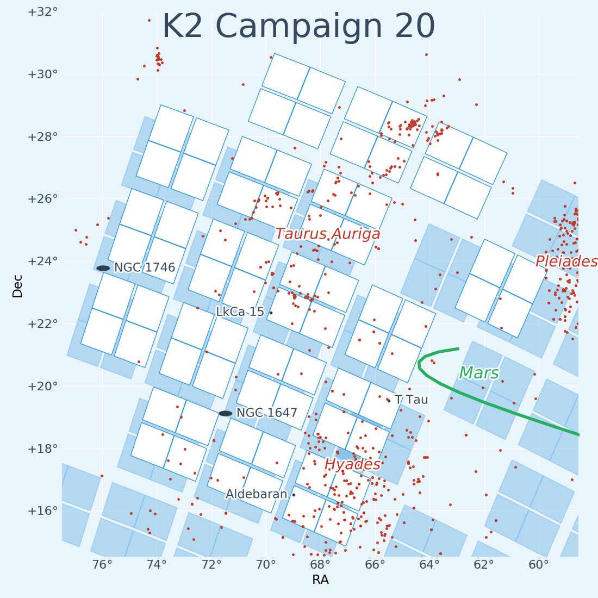

The solicitation for K2 Guest Observer Cycle 7 proposals has been released and made available via NSPIRES. Owing to the limited amount of spacecraft fuel remaining, Cycle 7 is comprised of Campaign 20 only. This post summarizes the opportunity.
Campaign 20
Campaign 20 will revisit the Taurus-Auriga star-forming region in the forward-facing mode. The region contains a large number of very young stars (<10 Myr) and the Campaign will significantly increase the number of such stars observed by Kepler. The field also includes members of the Pleiades (∼100 Myr) and Hyades (∼600 Myr) star clusters. The observations will improve the estimation of planet occurence rates as a function of stellar age, and will also enable the baseline of variability studies of young stars to be extended by including targets previously observed during Campaign 4 (2015) and Campaign 13 (2017).
Field 20 also contains a large number of main sequence stars, post-main sequence stars, and galaxies to enable a wide array of investigations.

Figure: Footprint of K2 Campaign 20.
Target and funding selection process
Similar to the selection process executed for K2 GO Cycle 6, the solicitation presents a two-phase process:
-
An optional Phase-1 proposal will enable targets to be selected for Campaign 20. Phase-1 proposals, including target tables and a scientific rationale, are requested by August 16, 2018 and must be submitted via email to keplergo@mail.arc.nasa.gov. The scientific rationale must not exceed 2 pages for small programs (less than 1000 targets) and 4 pages for large programs (1000 targets or more).
-
If the spacecraft health and fuel allow, then Phase-2 proposals for funding will be due January 17, 2019 via NSPIRES (see Section 7.1.2 of the solicitation). Phase-2 proposals are limited to use observations for targets which have been selected as part of Phase-1. The target list will be published in September 2018. Phase-2 proposals are eligible to receive funding awards between $30K and $150K, depending on the number of targets used.
Information about the proposal process, including the scope, evaluation criteria, availability of funds, eligibility, target selection tools, submission process, and frequently asked questions, is detailed on our proposal preparation page.
K2fov update required
Investigators interested in evaluating the visibility of targets during Campaign 20 must update their version of the K2fov target selection tool to version 8.0, released on 3 June 2018, to take the new field position into account.
K2fov can be updated from the command line using pip:
pip install K2fov --upgrade
The version number of your K2fov installation can be verified using the following command:
python -c "import K2fov; print(K2fov.__version__)"
The above command should return "8.0.0" or higher. If the number is lower, or if you see an error message, then contact us for support.
Questions?
Questions regarding this solicitation may be sent to keplergo@mail.arc.nasa.gov.